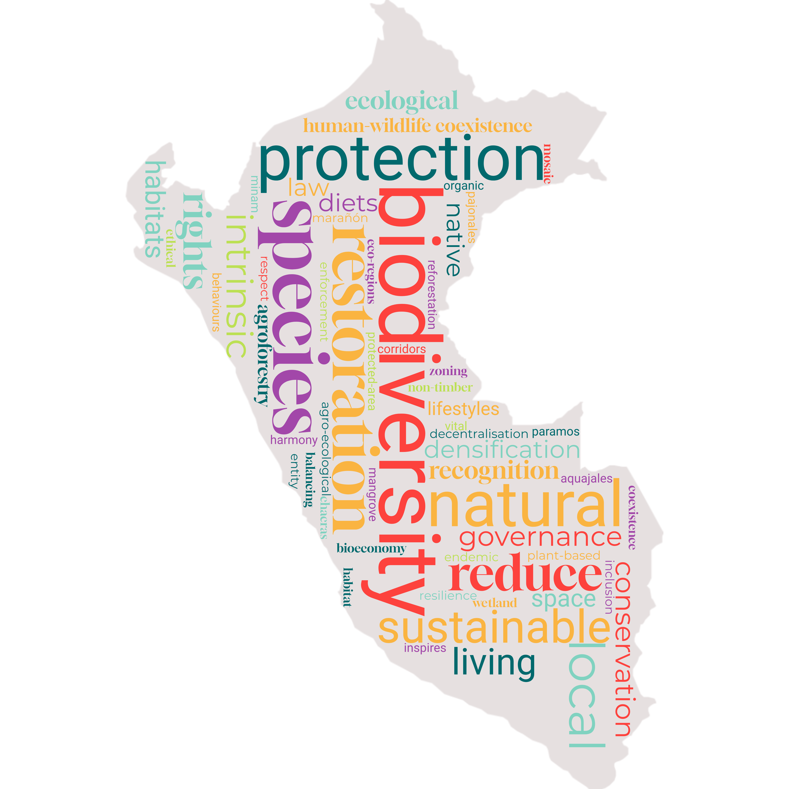

La naturaleza por la naturaleza
Para 2060, los paisajes del Perú se consideran entidades vivas y esenciales que merecen protección no solo por su utilidad para los humanos, sino por su valor inherente. Esta transformación surgió de un cambio social a principios del siglo XXI que reconoció el valor intrínseco de la naturaleza como un aspecto fundamental de una vida ética. Esta visión reorientó las prioridades de la gobernanza económica, social y ambiental, alineándolas con un ethos de coexistencia y respeto por la vida en todas sus formas.

Características
 Cambio climático: RCP 2.6
Cambio climático: RCP 2.6
 Población: 37.21 millones
Población: 37.21 millones
 Desarrollo económico: 1007 mil millones USD
Desarrollo económico: 1007 mil millones USD
 Perspectiva de valor sobre la naturaleza: Principalmente intrínseca
Perspectiva de valor sobre la naturaleza: Principalmente intrínseca
Áreas protegidas (proporción del Perú bajo protección): 30 % para 2030

Cambio de valores y estilos de vida
Al presenciar de primera mano la continua degradación de la naturaleza y el declive de especies características1, debido al cambio climático y a actividades antropogénicas, surge un profundo cambio en los valores sociales. La naturaleza deja de verse como un recurso para explotar y pasa a considerarse una socia en una existencia compartida. Esta perspectiva se consagra en la ley, basándose en el precedente legal que reconoce al río Marañón como entidad con derechos intrínsecos, incluido el derecho a existir y a estar libre de contaminación2. Este concepto de derechos de la naturaleza se difunde mediante iniciativas educativas para mejorar la conciencia ambiental de la población.
1 https://news.mongabay.com/2018/11/extinction-by-omission-perus-disappearing-ancient-shihuahuaco-trees/)
2 https://www.internationalrivers.org/wp-content/uploads/sites/86/2024/03/Maranon_Nota-de-Prensa-Local_19-Marzo-2024.pdf
En cuanto a los cambios en los estilos de vida, la población adopta comportamientos eficientes en el uso de recursos para reducir el impacto sobre la naturaleza. La proporción de habitantes urbanos alcanza el 92 % para el año 2060 ((1), según SSP1), con personas optando por vivir en asentamientos compactos que ofrecen mejor acceso a servicios y equipamientos. También hay un cambio sustancial en las dietas hacia un mayor consumo de productos vegetales para reducir la presión sobre los ecosistemas derivada de la producción ganadera3. El reconocimiento del valor intrínseco de la naturaleza fomenta una inclusión social más amplia, lo cual impulsa el progreso en la reducción de la desigualdad económica y social, por ejemplo, abordando cuestiones como el empleo desproporcionado de las mujeres en el sector informal (2).
Cambio de prioridades económicas
El desarrollo económico se orienta hacia actividades sostenibles en centros urbanos secundarios fuera de Lima, promoviendo negocios locales ecológicos y reduciendo la dependencia de industrias intensivas en recursos, lo que refuerza la resiliencia comunitaria (3) y genera mayor formalización económica cuyos ingresos permiten un mayor gasto gubernamental en la protección de la naturaleza, reconocida como esencial para la continuidad y el crecimiento de la economía verde4. En general, hay un crecimiento económico moderado, con un PIB per cápita que alcanza aproximadamente 1007 mil millones USD para 2060 (convertido con la paridad de poder adquisitivo de 2017), según lo proyectado en la SSP2 (4).
4 https://oxfordbusinessgroup.com/reports/peru/2017-report/economy/in-the-open-a-new-strategy-is-in-place-to-help-more-workers-move-to-the-formal-sector
El sector agrícola adopta técnicas que enfatizan la armonía con la naturaleza, como la agroforestería y las chacras agroecológicas integrales (5,6). El sector de la agricultura orgánica se expande, pues los pesticidas y fertilizantes sintéticos se sustituyen por alternativas naturales, garantizando la productividad del suelo a largo plazo. Sin embargo, estos cambios hacen la producción agrícola más extensa, requiriendo mayor área de suelo para satisfacer la demanda de alimentos. Al mismo tiempo, la reducción de la superficie destinada a la ganadería como respuesta al cambio de dietas compensa en parte esta tendencia. Para disminuir aún más los impactos ambientales, las zonas agrícolas se ubican más cerca de las áreas urbanas para acortar la cadena de suministro y minimizar el desperdicio.
Las políticas forestales se caracterizan por medidas estrictas de protección y restauración, con restricciones severas a la tala de bosques naturales y requisito de transición a especies nativas en bosques de producción (7). De modo similar, las actividades mineras se regulan estrictamente, sin otorgar nuevas concesiones más allá de 2030, sin embargo las operaciones existentes pueden continuar (8). Debido a exigentes requisitos ambientales legales, solo una parte limitada de estas concesiones se ejerce, minimizando el impacto ambiental global. El turismo se orienta hacia actividades centradas en la naturaleza, como la observación de fauna, recorridos por bosques y humedales, y tours de conservación marina, promoviendo activamente una relación más sostenible y respetuosa con la naturaleza (9).
Comunidades indígenas
El bienestar de las comunidades indígenas mejora mediante el fortalecimiento de los derechos sobre la tierra, el aumento de la representación política y la participación en esfuerzos de conservación. En este sentido, el papel de las comunidades indígenas como guardianas ambientales se reconoce formalmente en la ampliación de áreas protegidas con la inclusión de reservas gestionadas por comunidades indígenas (10). Sin embargo, regulaciones más estrictas de uso del suelo pueden generar tensiones cuando las comunidades buscan mantener prácticas agrícolas o de uso de recursos tradicionales. Además, existen políticas específicas para mejorar el acceso a la atención sanitaria, la educación y las oportunidades económicas (11).
Gobernanza, planificación y gestión de recursos
La gobernanza evoluciona para garantizar transparencia y regulación efectiva de las actividades que afectan a los ecosistemas, con un enfoque principal en el control estricto de la contaminación ambiental. La planificación del paisaje prioriza minimizar los impactos humanos sobre la naturaleza, por ejemplo, cuando se planifican desarrollos las autoridades deben considerar por igual los efectos en las personas y en la naturaleza de acuerdo con los derechos de ambos. En este contexto se deroga la modificación de 2023 a la Ley Forestal y de Fauna Silvestre5 y la responsabilidad de la zonificación forestal vuelve al MINAM. Paralelamente, los contratos de concesiones forestales existentes pueden expirar tras sus términos iniciales de 40 años. La gestión de concesiones se alinea con un principio de primacía de la naturaleza, de modo que solo los operadores que demuestren una sólida gestión ecológica renueven sus contratos. Las áreas de concesiones no renovadas quedan bajo gestión estatal y respaldan actividades sostenibles como el turismo de naturaleza de bajo impacto o la agroforestería comunitaria.
5 https://idehpucp.pucp.edu.pe/boletin-eventos/derechos-humanos-obligaciones-internacionales-y-deforestacion-de-la-amazonia-analisis-de-las-modificaciones-en-la-ley-forestal-y-de-fauna-silvestre-desde-el-derecho-internacional-29070/#_ftn13
Las áreas urbanas de todo el país se planifican mejor para la sostenibilidad, con una tendencia a la densificación y la integración de espacios verdes que reduce la impermeabilización arbitraria del suelo en zonas urbanas (12). El desarrollo de infraestructuras de transporte y comunicaciones toma en cuenta la necesidad de minimizar el impacto ecológico, con expansiones de carreteras estratégicas que evitan áreas sensibles para proteger hábitats naturales e biodiversidad. Un mejor cumplimiento de la ley prohíbe la construcción ilegal de vías en áreas de alto valor ecológico (13).
En cuanto a los recursos hídricos, la red hidrográfica se gestiona cuidadosamente para garantizar que los cauces sigan dinámicas naturales. Iniciativas de uso eficiente del agua ayudan a conservar el recurso necesario para que los ecosistemas naturales prosperen (14), mientras los marcos de gobernanza aplican medidas estrictas de conservación del agua para evitar la sobreexplotación y la contaminación de ríos, lagos y acuíferos. El desarrollo de infraestructura hídrica se enfoca en soluciones basadas en la naturaleza, como la restauración de humedales y la protección de cuencas, para mejorar la retención y la calidad del agua (15). Una supervisión regulatoria reforzada reduce las desviaciones ilegales de agua, y las iniciativas comunitarias de gestión del agua empoderan a los actores locales para participar en la gestión sostenible de los recursos.
Restauración y protección ecológica
En línea con la idea de la necesidad de áreas donde la naturaleza prospere libre de impactos humanos, existe un fuerte impulso para ampliar las áreas de conservación hasta cubrir el 30 % del territorio nacional para 2030, manteniendo vigentes las áreas de conservación existentes y sus esquemas de gestión. Los sitios para nuevas áreas de conservación se eligen según su valor para preservar la biodiversidad, equilibrando la inclusión de las diversas ecorregiones del Perú. Estas zonas suelen ubicarse lejos de los asentamientos para mitigar conflictos entre humanos y fauna, por lo que a menudo se designan como áreas protegidas estrictas gestionadas por el gobierno (por ejemplo parques nacionales) donde las actividades humanas en las zonas núcleo se gestionan estrictamente de acuerdo con la IUCN categoría Ia o Ib6. No obstante, una proporción de las nuevas áreas de conservación también se establece como reservas de biodiversidad lideradas por indígenas con áreas núcleo definidas y zonas de uso sostenible. La investigación ambiental dentro de las áreas protegidas se orienta a comprender cómo mantener y restaurar la biodiversidad. En el paisaje más amplio existen programas de restauración ambiental a gran escala con el objetivo de devolver a las áreas degradadas su funcionamiento como hábitats naturales. Además, se realiza un gran esfuerzo por limitar la introducción de especies no nativas para salvaguardar la biodiversidad endémica (16).
6 https://es.wikipedia.org/wiki/Categor%C3%ADas_de_%C3%A1reas_protegidas_de_la_UICN